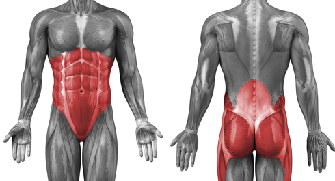

Бессмысленно будет отрицать тот факт, что именно пресс является для многих из нас сигналом о том, что его обладатель находится в отличной физической форме и регулярно занимается. Пресс визуально находится в центре тела и соединяет собой верхнюю и нижнюю половины туловища. Поэтому даже если у вас все хорошо и с торсом, и с руками, и с ногами, но с прессом не очень — внешне вы будете смотреться на порядок хуже.
Неудивительно, что в этой связи мышцам пресса уделяется повышенное внимание, особенно со стороны начинающих. Хотя мы и считаем, что новичкам стоит думать не о кубиках на животе, а об изучении правильной техники выполнения упражнений, тем не менее, в преддверии ПРОДВИНУТОГО блока решили немного осветить эту тему.
Мышцы кора (торса)

Мышцы кора — это целый комплекс мышц, которые отвечают за стабилизацию таза, бедер и позвоночника. В частности, к мышцам кора относятся: косые мышцы живота, поперечная мышца живота, прямая мышца живота, малые и средние ягодичные мышцы, приводящие мышцы, мышцы задней поверхности бедра, подостная мышца, клювовидно-плечевая мышца и целый ряд других. Следует отметить, что все эти мышцы активно участвуют в работе при выполнении всех 4 базовых упражнений из нашей программы!
Именно поэтому мы, в своё время, настаивали на том, чтобы вы направили все свои силы и энергию на то, чтобы научиться делать эти упражнения (подтягивания, приседания, отжимания от пола и выпады) максимально правильно.
Главный смысл мышц кора заключается в том, чтобы стабилизировать ваше тело в пространстве и помогать вам сохранять баланс. И хотя их работу сложно увидеть со стороны, но довольно легко почувствовать её на себе. Проведите небольшой эксперимент. Сначала попробуйте поотжиматься от пола. Затем попробуйте поотжиматься от футбольного или баскетбольного мяча. Теперь заберитесь на брусья для отжиманий и примите упор лёжа, поставив руки только на один из брусьев, так чтобы и ноги, и руки были на одной прямой. И попробуйте поотжиматься. Чувствуете разницу? Причина, по которой на нестабильных или сложных поверхностях выполнять упражнения гораздо сложнее, заключается именно в том, что в работу включается большое количество мышц-стабилизаторов, которые у многих недостаточно тренированы.
Следует также отметить, что зачастую именно они сдают первыми и вызывают изменения в технике (например прогибы в позвоночнике при отжиманиях). И нужно ли говорить о том, что для изучения сложных элементов, пришедших в воркаут из гимнастики, без хорошо натренированных мышц кора и думать не стоит? Поэтому не только можно, но и нужно уделять достаточное внимание этой группе мышц!
Есть два простых способа тренировки мышц кора:
1. При выполнении базовых упражнений делать акцент на напряжении этих мышц (о чём я уже писал ранее, рассматривая технику выполнения), то есть корпус должен быть прямым, живот втянутым и напряженным и т.д.
2. Добавить элемент нестабильности (для тех, кто уже достиг определённого уровня), например уже упомянутые выше отжимания на фитболе, или отжимания с перестановкой рук, или плиометрические отжимания.
Пресс
Ну и если говорить конкретно о прессе, то мы бы хотели выделить несколько важных моментов.
Новичкам. Как мы уже говорили ранее, если программа SOTKA является отправной точкой в тренировках, то нет особого смысла делать изолированные упражнения на пресс. Поскольку мышцы пресса участвуют во всех тех упражнениях, которые выполняются в рамках программы, и поскольку получаемой нагрузки на данном этапе должно быть достаточно.
Про кухню. Очень часто на просторах интернета можно услышать, что "пресс делается на кухне, а не в зале", и что "у всех нас есть пресс, просто не у всех он виден за жиром". И хотя в этих выражениях есть доля правды, но если вы не будете тренировать пресс, то кубиков у вас просто не будет.
Пресс — это мышца, и как и у любой мышцы у неё есть объём. Если будете правильно питаться, но не будете тренировать пресс — у вас будет плоский живот, но если вы хотите рельефные кубики, то тренироваться нужно обязательно, и об этом ниже.
Тренировки. Существует огромное количество разнообразных видео про тренировки пресса (а YouTube так просто вообще завален этим), но, если честно, эффективность большинства из них довольно сомнительна. Особенно когда советы дает человек, у которого пресса нет. Тем не менее есть парочка видео, которые уже неоднократно доказали свою эффективность и помогли многим людям построить превосходные кубики пресса.
Комплексная тренировка пресса из 5 упражнений от того, кто явно знает толк в накачке пресса!